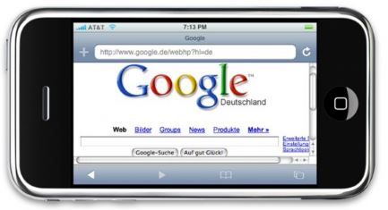
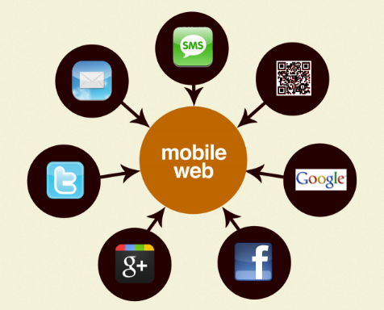

The Mobile Web
Around the same time as the internet was making the transition to Web 2.0, the world wide web also began to see a shift away from stationary desktops and bulky laptops, as more users began to access online content via their mobile phones. Early web-enabled phones had tiny screens, weak processors, and connected via slow wireless connections. As a result, viewing traditional web pages was a frustrating experience. However, as millions of smartphones started selling each year, the internet quickly adapted for mobile users.
Initially most websites accomplished this by creating an entirely separate site for their mobile audience. These sites used fewer graphics and a simplified text layout to improve transmissions speeds and readability. Over the next decade, however, mobile use continued to grow, mobile devices became more powerful, and mobile networks faster. Mobile website became capable of the same multimedia experience as traditional websites, and maintaining multiple sites became inefficient. Most website administrators have given up the separate site model, in favor of adaptive websites that adjust their layout based on the type of device being used or the screen size.
At the same time, as smartphones and tablets became the dominant mobile technology, many websites also began to offer similar features and content via mobile apps, which allowed them to take advantage of features specific to mobile devices and connect to users with real-time notifications. With annual smartphone sales now in the billions, and the majority of web browsing now being done on mobile devices, it is rare to find a site the is not mobile compatible; and soon, such sites will be completely obsolete.